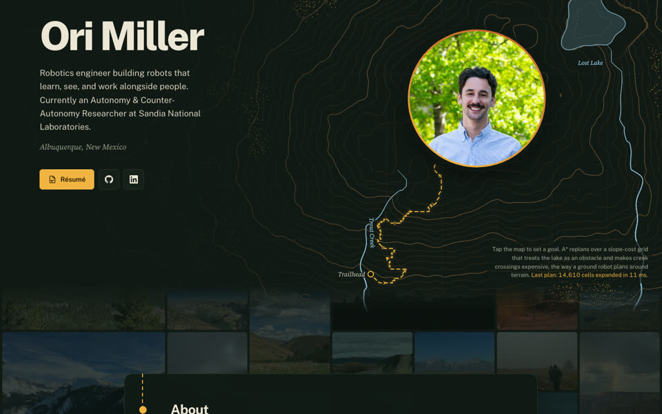
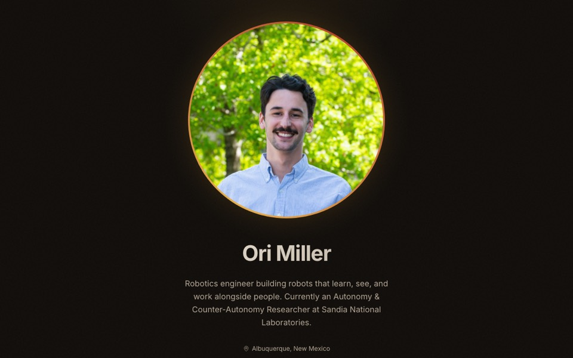
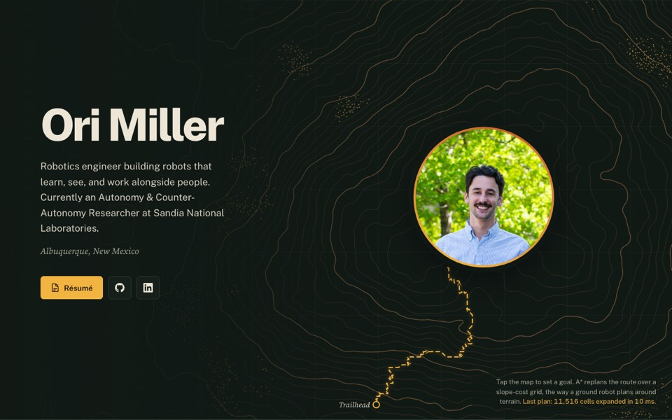
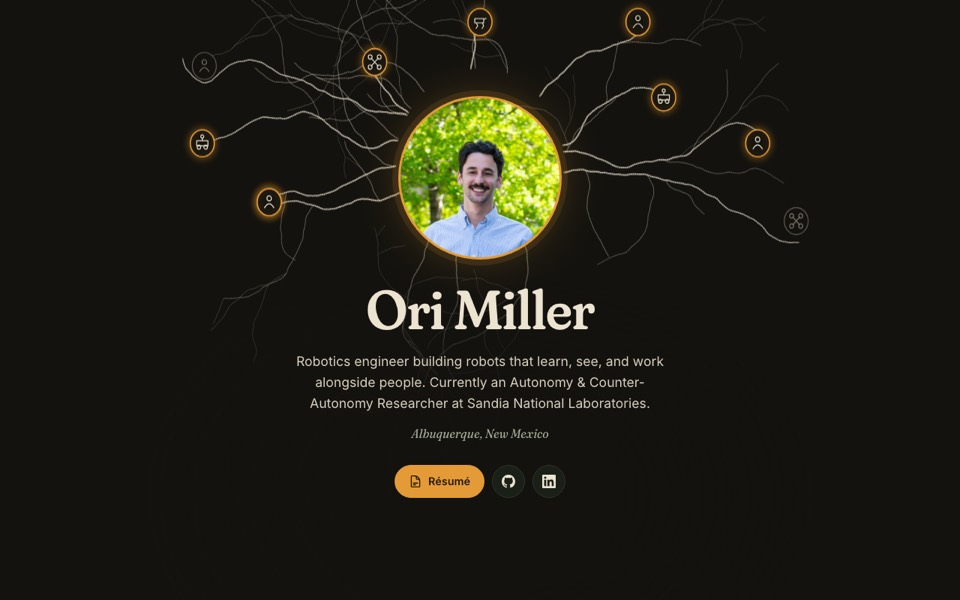
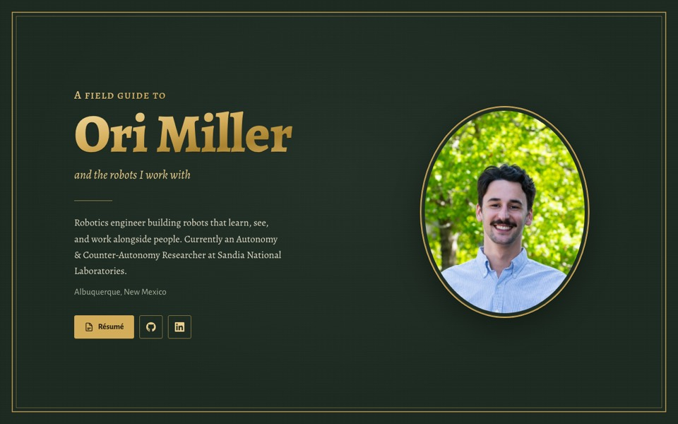
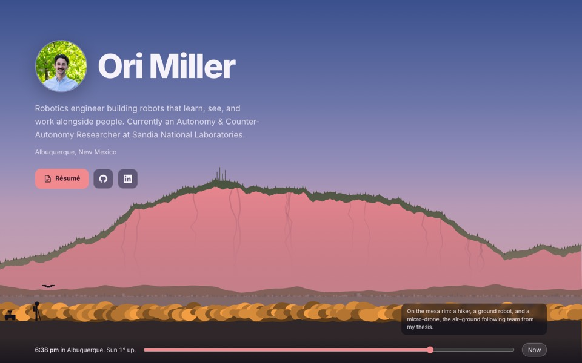

Each design brings outdoor recreation, autumn color, sustainability, and people and robots working together into the site. All five are working pages built from your real content and photos: open one to scroll it, click around, and narrow the window to see the phone layout. Nothing on the live site has changed.

Topo's palette and live A* map, with your photos laid out as a mosaic behind the whole page. Text sits on solid map-colored panels, so the photos show in the margins and in the gaps between sections, never behind the words.
Try: scroll slowly from About into Work history and watch the photos recede, then click one in a gap.

Your current site, re-leafed for an Albuquerque October. Same layout, same components, same Inter; the blue and violet become cottonwood gold and chile-ristra red.
Try: reload to watch the leaves, then click “Hiking” under About.

The page is a trail map read by headlamp. Your portrait sits on the summit of a generated mountain, and a route is planned to it live in the browser.
Try: click anywhere on the map, then scroll and watch the trail line.

Forests trade water and nutrients through fungal networks; your work does something similar between people and robots. Threads grow from your portrait to people, rovers, drones, and a quadruped.
Try: hover or tap the nodes in “What I work on”.

A cloth-bound naturalist's guide: “A field guide to Ori Miller and the robots I work with.” Green bookcloth, gold foil, and cream specimen plates.
Try: read the robot plates, then tap a dot on the range map.

The hero is the view east from the West Mesa, drawn for the sun's real position over Albuquerque right now. At sunset the Sandias turn watermelon pink under their green rind of conifers. Below the hero, the page keeps today's layout.
Try: drag the time slider through sunset and night, then turn on low-impact mode in the footer.
Topo. It stays dark and minimal with a plain sans, and its one bold move is a working path planner. A recruiter knows within seconds that a robotics engineer built the page, and the interaction stays out of the way until someone gets curious.
For the smallest step, take Bosque. The pieces also mix well: Bosque's palette with Topo's hero, the Field Guide's robot plates as a section on any design, or Sandia Glow's low-impact mode anywhere.